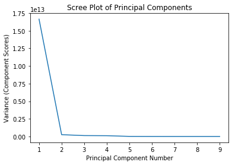
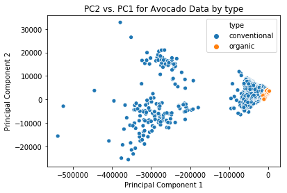
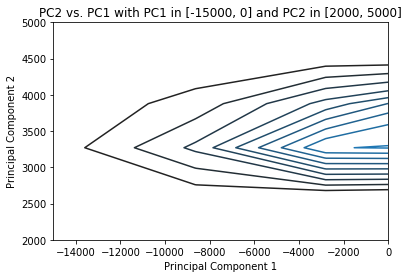

Avocado Classifier
This Jupyter Notebook contains the code that takes in a table with information about avocados (average price, total volumne, total bags) and classifies them as either conventional or organic. This classifier, written in R, is a $k$-nearest neighbors classifier using the cartesian distance between the point in question and the points in the training set. This notebook also contains a principal component analysis of the data to see how well the points can be represented 2-dimensionally. The data set is from Kaggle.
%load_ext rpy2.ipython
import numpy as np
import pandas as pd
import seaborn as sns
import matplotlib.pyplot as plt
%matplotlib inline
%R library(tidyverse)
%R r_avocado <- read_csv('avocado.csv')
# will create a placeholder variable tbl so that the tibbles
# can be exported to Python to be displayed nicely; will reuse
# this variable throughout the notebook
%R tbl <- head(r_avocado)
%Rget tbl
| Date | AveragePrice | Total Volume | 4046 | 4225 | 4770 | Total Bags | Small Bags | Large Bags | XLarge Bags | type | year | region | |
|---|---|---|---|---|---|---|---|---|---|---|---|---|---|
| 1 | 16796.0 | 1.33 | 64236.62 | 1036.74 | 54454.85 | 48.16 | 8696.87 | 8603.62 | 93.25 | 0.0 | conventional | 2015.0 | Albany |
| 2 | 16789.0 | 1.35 | 54876.98 | 674.28 | 44638.81 | 58.33 | 9505.56 | 9408.07 | 97.49 | 0.0 | conventional | 2015.0 | Albany |
| 3 | 16782.0 | 0.93 | 118220.22 | 794.70 | 109149.67 | 130.50 | 8145.35 | 8042.21 | 103.14 | 0.0 | conventional | 2015.0 | Albany |
| 4 | 16775.0 | 1.08 | 78992.15 | 1132.00 | 71976.41 | 72.58 | 5811.16 | 5677.40 | 133.76 | 0.0 | conventional | 2015.0 | Albany |
| 5 | 16768.0 | 1.28 | 51039.60 | 941.48 | 43838.39 | 75.78 | 6183.95 | 5986.26 | 197.69 | 0.0 | conventional | 2015.0 | Albany |
| 6 | 16761.0 | 1.26 | 55979.78 | 1184.27 | 48067.99 | 43.61 | 6683.91 | 6556.47 | 127.44 | 0.0 | conventional | 2015.0 | Albany |
Principal Component Analysis
Principal component analysis (PCA) is an application of the linear algebra technique of singular value decomposition (SVD), which breaks a matrix down into the product of three matrices:
where $U$ and $V$ contain the set of orthonormal eigenvectors for $AA^T$ and $A^TA$, respectively, and $\Sigma$ contains the singular values (the squareroots of the eigenvalues) of $A^TA$ (and $AA^T$) arranged in descending order along the diagonal. PCA shows how relationships between the variables in a data set contribute to its total variance, and, depending on how dependent the variables are on one another, can allow you to visualize a high-dimensional data set in 2 dimensions (e.g. as a scatter plot).
To begin PCA on the r_avocados tibble created above, we extract the tibble from R and create a pandas DataFrame in Python, before taking the desired numerical columns (all except Date, type, year, and region) as a numpy matrix. We the normalize the matrix (that is, center the variables about 0 by subtracting out the mean of the variable and then dividing by $\sqrt{n}$, where $n$ is the number of observations). Finally, we use the linalg sublibrary of numpy to compute the SVD of normed_avocados.
avocado = %Rget r_avocado
avocado_attributes = avocado.iloc[:,1:10].values
normed_avocados = (avocado_attributes - np.mean(avocado_attributes)) / np.sqrt(avocado_attributes.shape[0])
u, sigma, vt = np.linalg.svd(normed_avocados, full_matrices=False)
Scree Plot
While you can apply PCA to any numerical data set, it is important to know whether or not PCA accurately reflects changes in the data; that is, can you reduce the dimension of the data set so much without (much) loss of generality? The way to check this is to plot a “scree plot” of the singular values, which is just a plot of the squares of the values in $\Sigma$ versus the principal component number (i.e. the columber number in $\Sigma$). If the first 1 or 2 principal components are very high in the $y$ direction relative to the other principal components, then you can get a pretty good representation of your data in 2D.
Looking at the plot below, because the first principal component is so high relative to all the others, we should be OK to perform PCA on this data set.
sns.lineplot(x = range(1, len(sigma) + 1), y = sigma**2)
plt.title('Scree Plot of Principal Components')
plt.xlabel('Principal Component Number')
plt.ylabel('Variance (Component Scores)');

The actual PCA is done by plotting the product of the values in the normalized matrix times the first two right-singular vectors (that is, the first two columns of $V$). Because SVD (and np.lingalg.svd) returns $V^T$, we need to take $(V^T)^T$ in order to be able to multiply the matrices. Then we use seaborn to plot a scatterplot of PC2 vs. PC1, color-coding by the type column.
avocados_2d = normed_avocados @ vt.T[:, 0:2]
sns.scatterplot(x = avocados_2d[:, 0], y = avocados_2d[:, 1], hue = avocado['type'])
plt.title("PC2 vs. PC1 for Avocado Data by type")
plt.xlabel("Principal Component 1")
plt.ylabel("Principal Component 2");

It looks like there is actually a lot of overlap, especially closer to 0 along PC1. So, in order to reduce overplotting, we’ll use sns.kdeplot() to plot a topographical version of the overplotted portion of the scatterplot to indicate the density of the points. This will use kernel density estimation to estimate the density of each of the principal components to produce contour plots of the 3D surface.
ax = sns.kdeplot(avocados_2d[:, 0], avocados_2d[:, 1])
plt.xlim([-15000, 0])
plt.ylim([2000, 5000])
plt.xlabel('Principal Component 1')
plt.ylabel('Principal Component 2')
plt.title("PC2 vs. PC1 with PC1 in [-15000, 0] and PC2 in [2000, 5000]");

This plot shows where the overplotting issue is localized in the scatterplot above. While it appears in the scatterplot that the range [-100000, 0] along PC1 and [-10000, 10000] along PC2 contain the overplotting issues, the joint plot shows that the overplotting is actually much more localized than that.
$k$-NN Classifier
This cell selects the 4 columns we will use from the original table (three data point columns and the type column) and shuffles the rows of the csv file and separates them into a training set, to which the avocado to be classified will be compared, and a test set, to test the accuracy of the classifer once it is built. The test set will retain its type column so that we know what proportion of avocados the classifier gets correct. The training set has 18,000 rows and the test set has 249.
%%R
av <- r_avocado %>%
select(AveragePrice, 'Total Volume', 'Total Bags', type) %>%
sample_frac(1)
av_train <- av[1:18000,]
av_test <- av[-(1:18000),]
# ensuring all rows are capture in av_test and av_train
dim(av)[1] == dim(av_train)[1] + dim(av_test)[1]
[1] TRUE
Cartesian Distances
In this section, I will define a function that finds the 3-dimensional cartesian distance between two points. This is an application of the Pythagorean Theorem. The distance between two points $(x_1, y_1, z_1)$ and $(x_2, y_2, z_2)$ is
The function defined takes as arguments a table whose first 3 columns are data points and an array containing the corresponding values for the point that is being compared. It returns the table with a new column that has the distance between each row in the table and the point in the array.
%%R
dist <- function (tbl, row) {
vec <- row %>% slice(1) %>% c(recursive = TRUE) %>% unname()
new_tbl <- as_tibble(tbl)
distances <- sqrt((new_tbl[1] - vec[1])^2 + (new_tbl[2] - vec[2])^2 + (new_tbl[3] - vec[3])^2)
new_tbl$distances = unlist(distances)
new_tbl
}
%R tbl <- head(dist(av_train, av_test[1, 1:3]))
%Rget tbl
| AveragePrice | Total Volume | Total Bags | type | distances | |
|---|---|---|---|---|---|
| 1 | 1.51 | 213417.87 | 93135.77 | organic | 3.594009e+04 |
| 2 | 1.27 | 207295.00 | 73013.00 | conventional | 2.117595e+04 |
| 3 | 1.33 | 10100.44 | 5844.44 | organic | 1.874337e+05 |
| 4 | 0.69 | 1325974.87 | 290191.77 | conventional | 1.160738e+06 |
| 5 | 1.27 | 3025330.44 | 1072285.55 | conventional | 3.010836e+06 |
| 6 | 1.94 | 3507.89 | 2427.51 | organic | 1.947967e+05 |
Majority Classification
$k$-NN classifiers work by determining what classification a majority of the $k$ points closest to a point in question have. The function find_majority defined below runs the dist function on a table and returns that output sorted by increasing distance. The function knn below that selects the top $k$ rows and returns the majority classification.
%%R
find_majority <- function (df, df2, row_index) {
test <- df2[row_index, 1:3]
d <- df %>%
dist(test) %>%
arrange(distances)
d
}
%R tbl <- head(find_majority(av_train, av_test, 1))
%Rget tbl
| AveragePrice | Total Volume | Total Bags | type | distances | |
|---|---|---|---|---|---|
| 1 | 1.10 | 186520.46 | 68397.88 | conventional | 1008.005987 |
| 2 | 1.47 | 187381.18 | 70610.63 | conventional | 1538.694513 |
| 3 | 1.55 | 187617.54 | 68068.26 | organic | 1786.127859 |
| 4 | 1.23 | 187293.00 | 67821.00 | conventional | 1801.347256 |
| 5 | 1.31 | 185003.97 | 70544.59 | conventional | 1826.876545 |
| 6 | 0.91 | 186464.64 | 67288.78 | conventional | 2113.266523 |
%%R
knn <- function (df, df2, row, k) {
sort <- find_majority(df, df2, row)
new_df <- sort[1:k,] %>%
count(type) %>%
arrange(desc(n))
new_df[1, 1]
}
%R tbl <- knn(av_train, av_test, 1, 7)
%Rget tbl
| type | |
|---|---|
| 1 | conventional |
Testing the Classifier
For an example, I will test how accurate the 7-nearest neighbors classifer is. The test_accuracy function defined below runs the classifier on all rows of the av_test table (the entire test set), and then returns the proportion of rows that were correctly classified.
%%R
test_accuracy <- function (train, test, k) {
indices <- 1:dim(test)[1]
classed <- sapply(indices, (function(i){knn(train, test, i, k)}))
classed_test <- as_tibble(test)
classed_test$kNN.class <- classed
sum(classed_test$kNN.class == classed_test$type) / dim(classed_test)[1]
}
%%R
test_accuracy(av_train, av_test, 7)
[1] 0.9277108
Optimizing $k$
In order to determine how many nearest neigbors would be best to run on a random avocado, the cell below creates a table with the accuracy for each value of $k$. It will run through the classifier for odd integer values 1 through 99, and return a table with the accuracy of each value.
%%R
results <- tibble(.rows = 50)
results$k <- seq(1, 100, by = 2)
accuracy <- sapply(results$k, (function(k){test_accuracy(av_train, av_test, k)}))
results$accuracy <- unlist(accuracy)
%R tbl <- head(arrange(results, desc(accuracy)))
%Rget tbl
| k | accuracy | |
|---|---|---|
| 1 | 41.0 | 0.931727 |
| 2 | 5.0 | 0.927711 |
| 3 | 7.0 | 0.927711 |
| 4 | 11.0 | 0.927711 |
| 5 | 13.0 | 0.927711 |
| 6 | 15.0 | 0.927711 |
The results of this test change depending on the training and test sets, so the best way to get the value of $k$ that is most accurate most of the time is to bootstrap the training and test sets, which will be done in Python. The R function bootstrap_data_sets shuffles the r_avocado table loaded into R earlier and returns a tibble with the desired columns. The Python bootstrap_avocado function gets this table using %Rget and returns two DataFrames, the training and test sets.
%%R
bootstrap_data_sets <- function () {
av <- r_avocado %>%
select(AveragePrice, 'Total Volume', 'Total Bags', type) %>%
sample_frac(1)
av
}
def bootstrap_avocados():
%R bootstrapped_avocados <- bootstrap_data_sets()
av = %Rget bootstrapped_avocados
return av[0:18000], av[18000:]
In the cell below, we create a new DataFrame optimal_k which will contain the value of $k$ as the rows (and the index) and column $i$ of the DataFrame will be the accuracy for each value of $k$ on repetition $i$ of the bootstrap. That means that entry $(i, j)$ of the DataFrame below is the accuracy of $k=2i+1$ on repetition $j$.
reps = 1000
optimal_k = pd.DataFrame({'k' : range(1, 100, 2)}).set_index('k')
for i in range(1000):
accuracies = []
train, test = bootstrap_avocados()
for k in range(1, 100, 2):
%Rpush k
%Rpush train
%Rpush test
%R train <- as_tibble(train)
%R test <- as_tibble(test)
%R accuracy <- test_accuracy(train, test, k)
accuracy = %Rget accuracy
accuracies += [accuracy]
optimal_k.loc[:,i] = accuracies
optimal_k